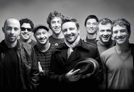

No Te Va Gustar
Popularmente abreviada como NTVG, es una banda uruguaya de rock formada el 26 de junio de 1994 en Montevideo. Está integrada por Emiliano Brancciari (voz y guitarra), Guzmán Silveira (bajo y coros), Diego Bartaburu (batería), Gonzalo Castex (percusión), Martín Gil (trompeta y coros), Denis Ramos (trombón), Mauricio Ortiz (saxofón barítono y tenor), Pablo Coniberti (guitarra) y Francisco Nasser (teclados).
